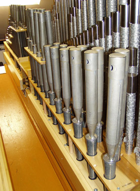

|
Vox Humana Latin Voix Humaine French Voz Humana Spanish |
Anthropoglossa Greek Menschenstimme German Voce Umana Italian Voz Humane Spanish |
The Vox Humana is one of the oldest organ stops, dating back at least as far as the late 1500's. A reed stop of the Regal class, it has been made in a wide variety of forms, including (according to Audsley) a free-reed. However, throughout the centuries it has most often employed cylindrical resonators, usually 1/4 or 1/8 length, and usually partially or fully capped. A typical form is shown in Audsley's illustration reproduced here (click on it for a larger image). It is arguably the only stop to survive, in its original form, through the symphonic excesses of the late nineteenth and early twentieth century.
The tone of the Vox Humana is not particulary unique; other Regals produce similar sounds. Its name, however, establishes a tonal goal which has caused countless critics to write it off as unsuccessful or even laughable. While organ builders have tried for half a millenium to imitate the human voice, the most successful attempts only manage to approximate the sound of a male chorus singing in the distance.
It has been often stated that the most important stop in any organ is the room into which it speaks, and the Vox Humana epitomizes this principle. The success or failure of this stop depends not so much on the details of its construction, but rather on its acoustical environment. A large, reverberant room, distance from the listener, and enclosure in a swell box all contribute greatly to its effect. A tremulant is also essential, which must be carefully adjusted.
The Voix Humaine was a standard voice in the Grand Orgue division of the French Classic organ, where it was always used with the 8' Bourdon and the tremblant doux, and often with the 4' Flute as well.
No theatre organ could be considered complete without at least one Vox Humana; some consider it to be as important as the Tibia Clausa. Larger instruments might have as many as four independent Vox Humana ranks. According to Strony, the finest ones were made by Wurlitzer, who made a few Vox Humana choruses with separate 16, 8, 4 ranks, and even a celeste!
All of the names translate to some variation on the phrase �human voice�. In Italian organs, the Voce Umana is usually a Diapason Celeste (see Piffaro).
See also Engelstimme.
The photograph below right shows in the foreground the Vox Humana 8' in the Swell at First Mennonite Church, Berne, Indiana, USA; Schneider 2002 opus XXIII. Click on it for a larger image.
The photograph below left shows a Vox Humana 8' in its own swell box, with the shutter panel raised to show the pipes. This dedicated swell box is located inside a swell box enclosing the entire division. This photo, taken at Culver Academies, Indiana, USA, appears courtesy of John Gouwens.
Osiris contains iver 500 examples of Vox Humana, 13 of which are at 16', 9 at 4', and the rest at 8'; two of the latter have II ranks. Osiris also contains about 190 examples of Voix Humaine, all at 8' pitch except for one at 4'; and 40 examples of Voz Humana. No examples of Voce Umana are known to be reed stops. No examples of Voz Humane are known.
Menschenstimme 8, Celestial I; St. Philip's Cathedral, Atlanta, Georgia, USA; Aeolian-Skinner 1962.
Menschenstimme 8', Swell; Trinity Church, New York City, New York, USA; Aeolian-Skinner 1970.
Anthropoglossa 8', Celestial; Holy Trinity Lutheran Church, Buffalo, New York, USA; Moller 1986.
Voz Humana en Eco 8', Manual right; San Mateo, Tarifa, Cádiz, Spain; 1762. This is the earliest known example of this name.
Voix Humaine 8', Hauptwerk; Abbey Church, Marmoutier, France; Silbermann 1710. This is the earliest known example of this name.
Vox Humana 8', Bovenwerk; St. John's, Schiedam, Holland; Neijenhoff c1600. This is the earliest known example of this name.
See the Sound Files appendix for general information.
| Vox Humana 8', Swell | Kellogg Auditorium, Battle Creek, Michigan, USA | Aeolian-Skinner, 1933 | St. Anne | ||
| Vox Humana 8', Echo | Kellogg Auditorium, Battle Creek, Michigan, USA | Aeolian-Skinner, 1933 | St. Anne | ||
| Vox Humana 8', Swell | Culver Academies, Indiana, USA | Möller 1951 | arpeggio | St. Anne | St. Anne (tremolo) |
|
Original website compiled by Edward L. Stauff. For educational use only. VoxHumana.html - Last updated 13 February 2009. |
Home Full Index |
{kind=link}